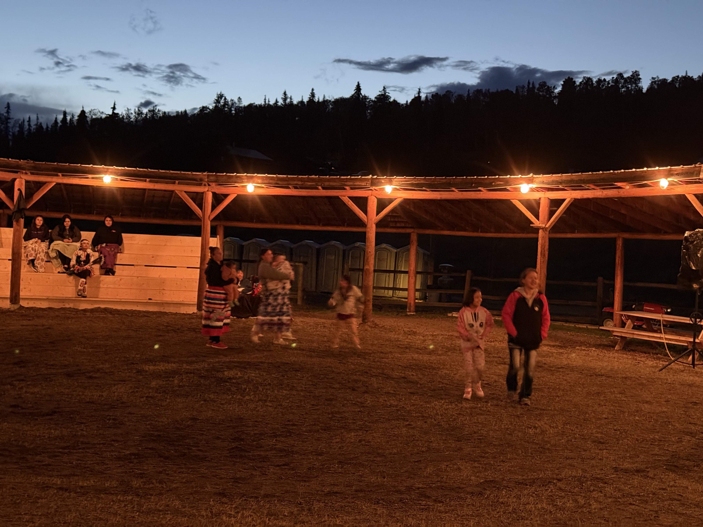
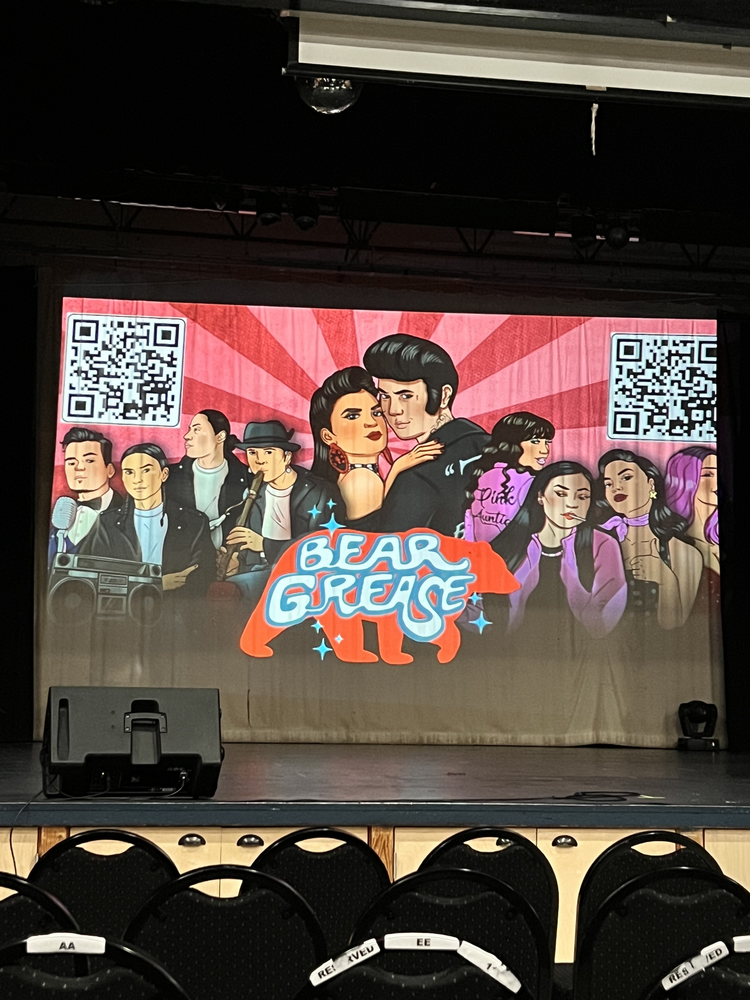
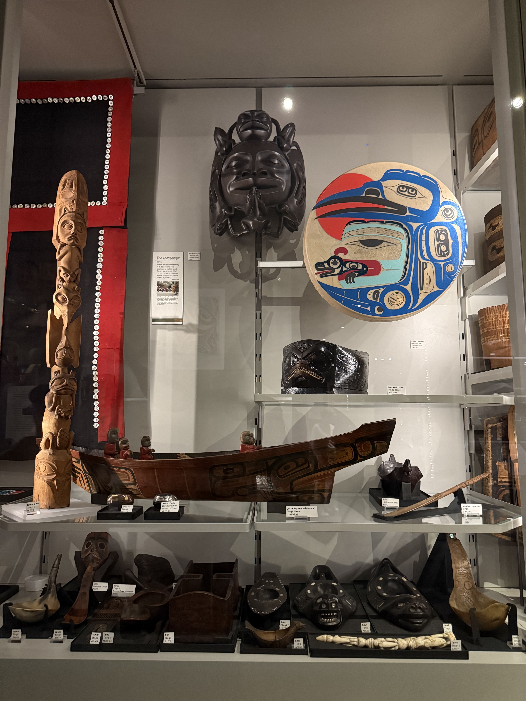

A photo of a cop helping to process salmon for smoking. I took this photo in Kluskus and thought it was cool the liason was willing to help process the salmon.
Welcome to my cultural page!
I've been lucky enough to attend some pretty cool cultural events in my life, here are some of my favorite photos
A photo of a cop helping to process salmon for smoking. I took this photo in Kluskus and thought it was cool the liason was willing to help process the salmon.


A photo of a group of dancers performing at the Lhooskuz powwow. This was a cool experience because Kluskus is quiet a ways out from any towns so we camped there for 3 days and it was just really nice to disconnect from the world.

My brother Gray dripping for salmon on the Fraser River standing on a rickety dock. I took this photo one of the times we went to get salmon that we delivered to family members.
The first video i took in williams lake at the fathers day powwow, it
was fun to watch and they have a food stand there with amazing bannock
tacos.
The second video is of me dipping for salmon on the fraser river, let
me tell you that is such an arm workout but it is really cool feeling
all the salmon bump the net.

Someone harvesting pin cherry bark for making medicine. I took this photo at a cultural event in my town Quesnel. I was the first aid attendant for the event and it was funny because the only person to get hurt was my girlfriend Rene. I thought it was really cool to see how they harvest the bark and learn about the cultural significance of it.

I'm not sure if this counts as a cultural event but I thought it was really cool to see a native take on grease. I went to this play with my family and girlfriend.

A photo of tlingit artifacts at the museum of anthropology in Vancouver. I thought it was pretty neat to see because I am Tlingit and it was cool to see some of the artifacts from my culture in person.